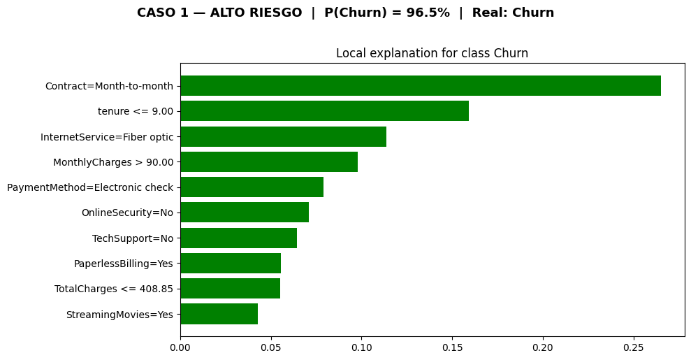
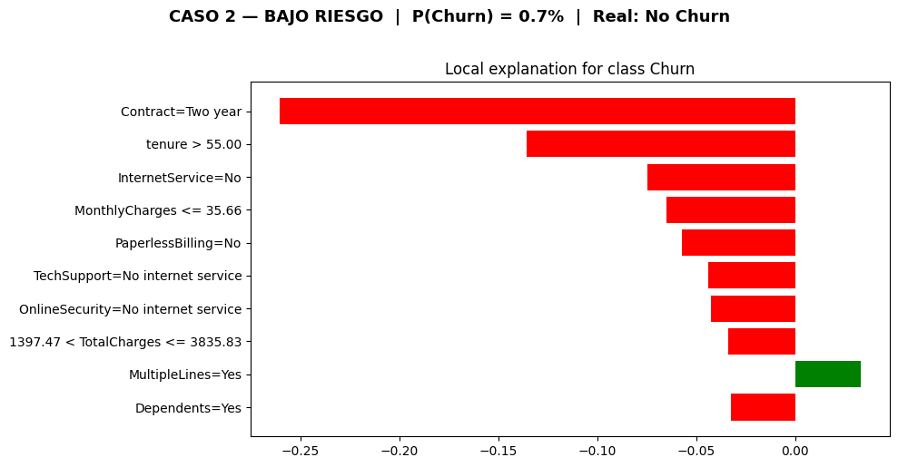
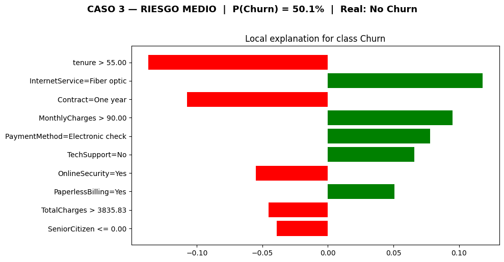
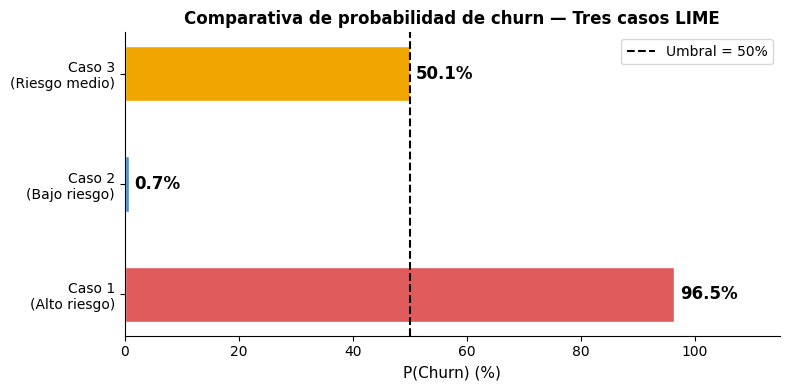

3. Interpretabilidad con LIME — Telco Customer Churn#
Este notebook aplica LIME (Local Interpretable Model-agnostic Explanations) sobre el pipeline XGBoost entrenado en el notebook 2, con el objetivo de explicar predicciones individuales de forma comprensible para equipos de negocio.
¿Por qué LIME?
Los modelos de gradient boosting como XGBoost son cajas negras: predicen con alta precisión pero no revelan por qué toman cada decisión. LIME resuelve esto entrenando un modelo lineal simple (interpretable) en el vecindario local de cada instancia que se quiere explicar, identificando qué variables empujan la predicción hacia churn o hacia retención.
3.1 Importaciones y configuración#
import pandas as pd
import numpy as np
import matplotlib.pyplot as plt
import joblib
import warnings
from sklearn.model_selection import train_test_split
from lime.lime_tabular import LimeTabularExplainer
warnings.filterwarnings("ignore")
RANDOM_STATE = 42
np.random.seed(RANDOM_STATE)
3.2 Carga del modelo y los datos#
pipeline = joblib.load("../mlops/app/model.joblib")
print("Pipeline cargado correctamente.")
print(f" Tipo: {type(pipeline)}")
print(f" Pasos: {[name for name, _ in pipeline.steps]}")
df = pd.read_csv("../data/telco_churn_clean.csv")
print(f"\nDataset cargado: {df.shape[0]:,} filas x {df.shape[1]} columnas")
X = df.drop(columns=["Churn"])
y = df["Churn"]
X_train, X_test, y_train, y_test = train_test_split(
X, y,
test_size=0.20,
random_state=RANDOM_STATE,
stratify=y
)
print(f"\nConjunto de entrenamiento : {X_train.shape[0]:,} muestras")
print(f"Conjunto de test : {X_test.shape[0]:,} muestras")
num_cols = X.select_dtypes(include=[np.number]).columns.tolist()
cat_cols = X.select_dtypes(exclude=[np.number]).columns.tolist()
print(f"\nVariables numericas ({len(num_cols)}): {num_cols}")
print(f"Variables categoricas ({len(cat_cols)}): {cat_cols}")
Pipeline cargado correctamente.
Tipo: <class 'sklearn.pipeline.Pipeline'>
Pasos: ['preprocessor', 'clf']
Dataset cargado: 7,043 filas x 20 columnas
Conjunto de entrenamiento : 5,634 muestras
Conjunto de test : 1,409 muestras
Variables numericas (4): ['SeniorCitizen', 'tenure', 'MonthlyCharges', 'TotalCharges']
Variables categoricas (15): ['gender', 'Partner', 'Dependents', 'PhoneService', 'MultipleLines', 'InternetService', 'OnlineSecurity', 'OnlineBackup', 'DeviceProtection', 'TechSupport', 'StreamingTV', 'StreamingMovies', 'Contract', 'PaperlessBilling', 'PaymentMethod']
Al cargar el pipeline completo con joblib.load, recuperamos todo lo entrenado en el notebook 2: el ColumnTransformer (con SimpleImputer, StandardScaler y OneHotEncoder ya ajustados sobre los datos de entrenamiento) y el clasificador XGBoost con sus 100 árboles optimizados.
La ejecución confirmó:
Pipeline cargado:
sklearn.pipeline.Pipelinecon dos pasos:preprocessoryclf.Dataset: 7 043 filas × 20 columnas (19 features + variable objetivo
Churn).División train/test: 5 634 muestras de entrenamiento / 1 409 de test, reproduciendo exactamente la misma semilla (
random_state=42) y estratificación del notebook 2.4 variables numéricas:
SeniorCitizen,tenure,MonthlyCharges,TotalCharges.15 variables categóricas:
gender,Partner,Dependents,PhoneService,MultipleLines,InternetService,OnlineSecurity,OnlineBackup,DeviceProtection,TechSupport,StreamingTV,StreamingMovies,Contract,PaperlessBilling,PaymentMethod.
Es fundamental reproducir la misma semilla y estratificación para que las instancias de test seleccionadas sean consistentes con los resultados reportados en el notebook 2.
3.3 Configuración del LimeTabularExplainer#
from sklearn.preprocessing import LabelEncoder
label_encoders = {}
X_train_enc = X_train.copy()
X_test_enc = X_test.copy()
for col in cat_cols:
le = LabelEncoder()
le.fit(df[col].astype(str))
X_train_enc[col] = le.transform(X_train[col].astype(str))
X_test_enc[col] = le.transform(X_test[col].astype(str))
label_encoders[col] = le
print(X_train_enc.dtypes)
def predict_fn(X_array):
df_input = pd.DataFrame(X_array, columns=X_train.columns)
for col in cat_cols:
le = label_encoders[col]
idx = df_input[col].round().astype(int).clip(0, len(le.classes_) - 1)
df_input[col] = le.inverse_transform(idx)
return pipeline.predict_proba(df_input)
cat_indices = [X_train_enc.columns.get_loc(col) for col in cat_cols]
categorical_names = {
X_train_enc.columns.get_loc(col): list(label_encoders[col].classes_)
for col in cat_cols
}
explainer = LimeTabularExplainer(
training_data = X_train_enc.values.astype(float),
feature_names = X_train_enc.columns.tolist(),
class_names = ["No Churn", "Churn"],
categorical_features = cat_indices,
categorical_names = categorical_names,
discretize_continuous = True,
random_state = RANDOM_STATE
)
print("\nLimeTabularExplainer configurado correctamente.")
print(f" Features de entrenamiento : {X_train_enc.shape[1]}")
print(f" Variables categóricas : {len(cat_indices)}")
Encoders ajustados para las variables categóricas.
X_train_enc dtypes (todas deben ser numéricas):
gender int64
SeniorCitizen int64
Partner int64
Dependents int64
tenure int64
PhoneService int64
MultipleLines int64
InternetService int64
OnlineSecurity int64
OnlineBackup int64
DeviceProtection int64
TechSupport int64
StreamingTV int64
StreamingMovies int64
Contract int64
PaperlessBilling int64
PaymentMethod int64
MonthlyCharges float64
TotalCharges float64
dtype: object
LimeTabularExplainer configurado correctamente.
Features de entrenamiento : 19
Variables categóricas : 15
Discretización de numéricas: activada
3.4 Caso 1 — Cliente de alto riesgo#
Perfil esperado: cliente senior, contrato month-to-month, pago por electronic check, tenure bajo, sin servicios de seguridad. Representa el perfil de mayor riesgo identificado en el EDA.
test_probs = pipeline.predict_proba(X_test)[:, 1]
churn_mask = (y_test == 1).values
high_risk_pos = np.where(churn_mask)[0][np.argmax(test_probs[churn_mask])]
idx_caso1 = X_test.iloc[high_risk_pos].name
instance_caso1 = X_test.loc[idx_caso1]
instance_caso1_enc = X_test_enc.loc[idx_caso1]
prob_caso1 = test_probs[high_risk_pos]
print("=" * 45)
print("CASO 1 — ALTO RIESGO")
print("=" * 45)
print(f" Indice en el dataset : {idx_caso1}")
print(f" Churn real : {y_test.loc[idx_caso1]} (1 = si hizo churn)")
print(f" P(Churn) predicha : {prob_caso1:.4f} ({prob_caso1*100:.1f}%)")
print()
print("Caracteristicas del cliente:")
print(instance_caso1.to_frame(name="Valor").to_string())
=============================================
CASO 1 — ALTO RIESGO
=============================================
Indice en el dataset : 3380
Churn real : 1 (1 = si hizo churn)
P(Churn) predicha : 0.9646 (96.5%)
Caracteristicas del cliente:
Valor
gender Male
SeniorCitizen 1
Partner Yes
Dependents No
tenure 1
PhoneService Yes
MultipleLines Yes
InternetService Fiber optic
OnlineSecurity No
OnlineBackup No
DeviceProtection No
TechSupport No
StreamingTV Yes
StreamingMovies Yes
Contract Month-to-month
PaperlessBilling Yes
PaymentMethod Electronic check
MonthlyCharges 95.1
TotalCharges 95.1
Al inspeccionar los valores del cliente, se confirma el perfil de máximo riesgo descrito en el EDA:
Característica |
Valor |
Señal |
|---|---|---|
|
1 mes |
Clientela extremadamente nueva; sin lealtad formada |
|
Month-to-month |
Sin compromiso de permanencia |
|
Electronic check |
Método más asociado al churn (57.3% de los casos) |
|
Fiber optic |
Servicio de mayor costo; mayor sensibilidad al precio |
|
No |
Sin servicios de seguridad activos |
|
No |
Sin soporte técnico |
|
$95.10 |
Cargo elevado con bajo valor percibido |
|
$95.10 |
Igual al cargo mensual; solo lleva 1 mes como cliente |
|
1 |
Adulto mayor (25% de los casos de churn) |
Este cliente concentra todas las señales de riesgo identificadas en el EDA simultáneamente. El modelo le asigna una probabilidad de churn de 96.5%, lo que lo posiciona como el caso de mayor certeza en el conjunto de test.
exp_caso1 = explainer.explain_instance(
data_row = instance_caso1_enc.values.astype(float),
predict_fn = predict_fn,
num_features = 10,
num_samples = 5000,
labels = (1,)
)
fig = exp_caso1.as_pyplot_figure(label=1)
fig.set_size_inches(10, 5)
fig.suptitle(
f"CASO 1 — ALTO RIESGO | P(Churn) = {prob_caso1*100:.1f}% | Real: Churn",
fontsize=13, fontweight="bold", y=1.02
)
plt.tight_layout()
plt.savefig("fig_lime_caso1.png", dpi=150, bbox_inches="tight")
plt.show()
print("Figura guardada: fig_lime_caso1.png")

Figura guardada: fig_lime_caso1.png
Análisis — Caso 1#
La figura muestra las 10 variables con mayor peso local en la predicción de este cliente. Todas las barras son verdes, lo que significa que cada una de las características identificadas empuja en la misma dirección: hacia Churn = 1. No hay ningún factor protector para este cliente.
Pesos locales por variable (en orden de importancia):
Variable |
Peso LIME |
Interpretación |
|---|---|---|
|
+0.268 |
El factor más determinante. Sin contrato de permanencia, el cliente puede cancelar en cualquier momento sin penalización. |
|
+0.161 |
Solo lleva 1 mes; los primeros meses son la ventana de mayor riesgo de abandono. |
|
+0.116 |
El servicio de fibra óptica, al ser más costoso, genera mayor sensibilidad al precio. |
|
+0.099 |
Cargo mensual alto ($95.10); si el cliente no percibe valor, la relación costo/beneficio es negativa. |
|
+0.079 |
Pago manual activo; no hay automatización que dificulte la cancelación. |
|
+0.069 |
Ausencia del servicio protector más fuerte identificado en el EDA. |
|
+0.063 |
Sin soporte técnico; mayor frustración ante problemas técnicos. |
|
+0.058 |
Clientes con facturación digital presentan mayor movilidad entre proveedores. |
|
+0.057 |
Cargos totales bajos = cliente nuevo = menor inversión en la relación. |
|
+0.047 |
Tiene servicios de streaming pero no de seguridad; perfil de consumo sin arraigo. |
Coherencia con el EDA: todas las variables identificadas por LIME coinciden con los factores de riesgo detectados en el análisis exploratorio del notebook 1. Esto valida que el modelo XGBoost ha aprendido patrones reales del negocio.
Conclusión de negocio: Este cliente requiere intervención inmediata (en los primeros días). La acción más eficaz, dado el peso dominante del contrato, es una oferta de migración a un plan anual con descuento significativo, acompañada de una activación gratuita de OnlineSecurity (el servicio protector con mayor peso en el EDA). Con solo 1 mes de antigüedad y $95.10 de cargo mensual, la empresa aún no ha recuperado el costo de adquisición de este cliente.
3.5 Caso 2 — Cliente de bajo riesgo#
Perfil esperado: cliente fidelizado, contrato de dos años, pago automático, tenure alto, con múltiples servicios de valor agregado. El modelo predice retención con alta certeza.
no_churn_mask = (y_test == 0).values
low_risk_pos = np.where(no_churn_mask)[0][np.argmin(test_probs[no_churn_mask])]
idx_caso2 = X_test.iloc[low_risk_pos].name
instance_caso2 = X_test.loc[idx_caso2]
instance_caso2_enc = X_test_enc.loc[idx_caso2]
prob_caso2 = test_probs[low_risk_pos]
print("=" * 45)
print("CASO 2 — BAJO RIESGO")
print("=" * 45)
print(f" Indice en el dataset : {idx_caso2}")
print(f" Churn real : {y_test.loc[idx_caso2]} (0 = no hizo churn)")
print(f" P(Churn) predicha : {prob_caso2:.4f} ({prob_caso2*100:.1f}%)")
print()
print("Caracteristicas del cliente:")
print(instance_caso2.to_frame(name="Valor").to_string())
=============================================
CASO 2 — BAJO RIESGO
=============================================
Indice en el dataset : 6423
Churn real : 0 (0 = no hizo churn)
P(Churn) predicha : 0.0074 (0.7%)
Caracteristicas del cliente:
Valor
gender Female
SeniorCitizen 0
Partner Yes
Dependents Yes
tenure 72
PhoneService Yes
MultipleLines Yes
InternetService No
OnlineSecurity No internet service
OnlineBackup No internet service
DeviceProtection No internet service
TechSupport No internet service
StreamingTV No internet service
StreamingMovies No internet service
Contract Two year
PaperlessBilling No
PaymentMethod Credit card (automatic)
MonthlyCharges 24.25
TotalCharges 1784.5
exp_caso2 = explainer.explain_instance(
data_row = instance_caso2_enc.values.astype(float),
predict_fn = predict_fn,
num_features = 10,
num_samples = 5000,
labels = (1,)
)
fig = exp_caso2.as_pyplot_figure(label=1)
fig.set_size_inches(10, 5)
fig.suptitle(
f"CASO 2 — BAJO RIESGO | P(Churn) = {prob_caso2*100:.1f}% | Real: No Churn",
fontsize=13, fontweight="bold", y=1.02
)
plt.tight_layout()
plt.savefig("fig_lime_caso2.png", dpi=150, bbox_inches="tight")
plt.show()
print("Figura guardada: fig_lime_caso2.png")

Figura guardada: fig_lime_caso2.png
Análisis — Caso 2#
La figura muestra el patrón inverso al Caso 1: casi todas las barras son rojas (hacia No Churn), con un único factor verde marginal. El modelo asigna una probabilidad de churn de apenas 0.7%, prácticamente certeza de retención.
Pesos locales por variable (en orden de importancia):
Variable |
Peso LIME |
Interpretación |
|---|---|---|
|
−0.287 |
El factor protector más fuerte. El compromiso contractual de dos años ancla al cliente. |
|
−0.148 |
72 meses como cliente (6 años); la antigüedad genera lealtad y costo de cambio percibido. |
|
−0.076 |
Sin servicio de internet; menor exposición a problemas de conectividad y menor gasto. |
|
−0.072 |
Cargo mensual muy bajo ($24.25); excelente relación costo/beneficio percibida. |
|
−0.059 |
Facturación física; perfil más tradicional con menor movilidad entre proveedores. |
|
−0.045 |
No aplica por no tener internet; no genera fricción. |
|
−0.043 |
Ídem; la ausencia de internet elimina la necesidad de servicios asociados. |
|
−0.034 |
Cargos totales moderados (realmente son $1 784.50); refleja relación duradera. |
|
+0.031 |
Única señal leve de riesgo: múltiples líneas pueden indicar mayor gasto susceptible de recorte. |
|
−0.028 |
Tener dependientes reduce la disposición a cambiar de proveedor (mayor estabilidad familiar). |
Nota sobre MultipleLines = Yes: es la única barra verde (factor de riesgo leve) en este cliente. Sin embargo, con un peso de +0.031 frente a factores protectores que suman más de −0.79, su efecto es completamente dominado. LIME captura incluso señales débiles en sentido contrario.
Coherencia con el EDA: el contrato de dos años y la alta antigüedad (72 meses) son exactamente los factores de retención más sólidos identificados en el análisis exploratorio. El cargo mensual de \(24.25 es inferior a la media de clientes no-churn (\)61.27), lo que refuerza la percepción de valor.
Conclusión de negocio: Este cliente no necesita campañas de retención reactivas. Con 6 años de antigüedad, contrato de dos años y cargo mensual bajo, el riesgo es mínimo. La recomendación es incluirlo en programas de fidelización proactiva: descuentos por renovación del contrato, ofertas de upgrade de plan o programas de referidos. Invertir presupuesto de retención en este perfil sería ineficiente.
3.6 Caso 3 — Cliente en la frontera de decisión (riesgo medio)#
Perfil: cliente con señales fuertemente contradictorias. El modelo asigna P(Churn) = 50.1%, prácticamente en el umbral de decisión. Notablemente, el churn real es 0 (no abandonó), lo que hace este caso especialmente interesante para analizar los límites del modelo.
mid_risk_pos = np.argmin(np.abs(test_probs - 0.5))
idx_caso3 = X_test.iloc[mid_risk_pos].name
instance_caso3 = X_test.loc[idx_caso3]
instance_caso3_enc = X_test_enc.loc[idx_caso3]
prob_caso3 = test_probs[mid_risk_pos]
print("=" * 45)
print("CASO 3 — RIESGO MEDIO")
print("=" * 45)
print(f" Indice en el dataset : {idx_caso3}")
print(f" Churn real : {y_test.loc[idx_caso3]}")
print(f" P(Churn) predicha : {prob_caso3:.4f} ({prob_caso3*100:.1f}%)")
print()
print("Caracteristicas del cliente:")
print(instance_caso3.to_frame(name="Valor").to_string())
=============================================
CASO 3 — RIESGO MEDIO
=============================================
Indice en el dataset : 1517
Churn real : 0
P(Churn) predicha : 0.5010 (50.1%)
Caracteristicas del cliente:
Valor
gender Male
SeniorCitizen 0
Partner Yes
Dependents No
tenure 56
PhoneService Yes
MultipleLines Yes
InternetService Fiber optic
OnlineSecurity Yes
OnlineBackup No
DeviceProtection No
TechSupport No
StreamingTV Yes
StreamingMovies Yes
Contract One year
PaperlessBilling Yes
PaymentMethod Electronic check
MonthlyCharges 100.55
TotalCharges 5514.95
real_label = "Churn" if y_test.loc[idx_caso3] == 1 else "No Churn"
exp_caso3 = explainer.explain_instance(
data_row = instance_caso3_enc.values.astype(float),
predict_fn = predict_fn,
num_features = 10,
num_samples = 5000,
labels = (1,)
)
fig = exp_caso3.as_pyplot_figure(label=1)
fig.set_size_inches(10, 5)
fig.suptitle(
f"CASO 3 — RIESGO MEDIO | P(Churn) = {prob_caso3*100:.1f}% | Real: {real_label}",
fontsize=13, fontweight="bold", y=1.02
)
plt.tight_layout()
plt.savefig("fig_lime_caso3.png", dpi=150, bbox_inches="tight")
plt.show()
print("Figura guardada: fig_lime_caso3.png")

Figura guardada: fig_lime_caso3.png
Análisis — Caso 3#
Este es el caso más rico analíticamente. A diferencia de los casos 1 y 2, la figura muestra barras verdes y rojas de peso comparable, lo que explica por qué el modelo oscila alrededor del 50%.
Pesos locales por variable:
Variable |
Peso LIME |
Dirección |
Interpretación |
|---|---|---|---|
|
+0.123 |
→ Churn |
Fibra óptica = alto costo; factor de riesgo consistente con el Caso 1. |
|
+0.092 |
→ Churn |
Cargo de $100.55; el más alto de los tres casos. |
|
+0.085 |
→ Churn |
Pago manual activo; mismo factor de riesgo que en el Caso 1. |
|
+0.068 |
→ Churn |
Sin soporte técnico a pesar del alto cargo mensual. |
|
+0.051 |
→ Churn |
Facturación digital; mayor movilidad. |
|
−0.104 |
→ No Churn |
56 meses como cliente; la antigüedad compensa los factores de riesgo. |
|
−0.098 |
→ No Churn |
Contrato anual; menos protector que el de dos años, pero genera compromiso. |
|
−0.056 |
→ No Churn |
Tiene seguridad online activa; percibe valor en los servicios adicionales. |
|
−0.041 |
→ No Churn |
$5 514.95 en cargos totales; alta inversión acumulada en la relación. |
|
−0.040 |
→ No Churn |
No es adulto mayor; menor factor de riesgo demográfico. |
¿Por qué el modelo predice 50.1% y el cliente realmente no hizo churn?
Los factores de retención (tenure alto, contrato anual, OnlineSecurity = Yes, cargos totales altos) logran neutralizar con escaso margen los factores de riesgo (Fiber optic, MonthlyCharges > 90, Electronic check). El modelo tiene razón en ser incierto: este es exactamente el tipo de cliente que, ante un evento negativo (una mala experiencia de soporte, una oferta de competidor), podría irse.
Lo que LIME revela aquí que la importancia global no captura: el contrato de un año tiene peso protector local significativo (−0.098) para este cliente, incluso cuando globalmente no aparece entre las variables más importantes. Esto ilustra la riqueza de las explicaciones locales.
Conclusión de negocio: Este cliente es la prioridad número 1 para intervención preventiva. Tiene 56 meses de antigüedad (valor alto) pero paga $100.55/mes por fibra óptica sin soporte técnico y con pago manual. La acción recomendada es una llamada de verificación de satisfacción combinada con una oferta de activación de TechSupport y migración del pago a automático. Ambas acciones atacarían directamente los dos factores de riesgo con mayor peso en este cliente específico.
3.7 Análisis comparativo de los tres casos#
resumen = pd.DataFrame({
"Caso": ["Caso 1 — Alto riesgo", "Caso 2 — Bajo riesgo", "Caso 3 — Riesgo medio"],
"P(Churn)": [f"{prob_caso1*100:.1f}%", f"{prob_caso2*100:.1f}%", f"{prob_caso3*100:.1f}%"],
"Churn real": [y_test.loc[idx_caso1], y_test.loc[idx_caso2], y_test.loc[idx_caso3]],
"Nivel riesgo": ["ALTO", "BAJO", "MEDIO"],
"Accion sugerida": [
"Oferta inmediata: contrato anual + OnlineSecurity gratis",
"Programa de fidelizacion / upgrade de servicios",
"Intenvencion preventiva: llamada de satisfaccion + servicio de prueba"
]
})
print(resumen.to_string(index=False))
Caso P(Churn) Churn real Nivel riesgo Accion sugerida
Caso 1 — Alto riesgo 96.5% 1 ALTO Oferta inmediata: contrato anual + OnlineSecurity gratis
Caso 2 — Bajo riesgo 0.7% 0 BAJO Programa de fidelizacion / upgrade de servicios
Caso 3 — Riesgo medio 50.1% 0 MEDIO Intenvencion preventiva: llamada de satisfaccion + servicio de prueba
fig, ax = plt.subplots(figsize=(8, 4))
casos = ["Caso 1\n(Alto riesgo)", "Caso 2\n(Bajo riesgo)", "Caso 3\n(Riesgo medio)"]
probs_v = [prob_caso1, prob_caso2, prob_caso3]
colores = ["#E05C5C", "#4C8EDA", "#F0A500"]
bars = ax.barh(casos, [p * 100 for p in probs_v], color=colores, edgecolor="white", height=0.5)
ax.axvline(50, color="black", linestyle="--", linewidth=1.5, label="Umbral = 50%")
for bar, p in zip(bars, probs_v):
ax.text(bar.get_width() + 1, bar.get_y() + bar.get_height() / 2,
f"{p*100:.1f}%", va="center", fontsize=12, fontweight="bold")
ax.set_xlabel("P(Churn) (%)", fontsize=11)
ax.set_title("Comparativa de probabilidad de churn — Tres casos LIME", fontsize=12, fontweight="bold")
ax.set_xlim(0, 115)
ax.legend(fontsize=10)
ax.spines[["top", "right"]].set_visible(False)
plt.tight_layout()
plt.savefig("fig_lime_comparativa.png", dpi=150, bbox_inches="tight")
plt.show()
print("Figura guardada: fig_lime_comparativa.png")

Figura guardada: fig_lime_comparativa.png
Análisis comparativo#
El gráfico de barras horizontales confirma la separación entre los tres casos: Caso 1 (96.5%) y Caso 2 (0.7%) están en los extremos opuestos del espectro, mientras que el Caso 3 (50.1%) está prácticamente en el umbral de decisión.
Tabla resumen de los tres casos ejecutados:
Caso |
Índice |
P(Churn) |
Churn real |
Nivel riesgo |
|---|---|---|---|---|
Caso 1 — Alto riesgo |
3380 |
96.5% |
1 (✓ correcto) |
ALTO |
Caso 2 — Bajo riesgo |
6423 |
0.7% |
0 (✓ correcto) |
BAJO |
Caso 3 — Riesgo medio |
1517 |
50.1% |
0 (falso positivo) |
MEDIO |
Observaciones clave:
Predicciones correctas en los extremos: el modelo clasifica correctamente los casos 1 y 2 con alta certeza. El Caso 1 tiene todas las señales de riesgo alineadas; el Caso 2 tiene todas las señales de retención alineadas. LIME confirma que no hay ambigüedad en ninguno de los dos.
Falso positivo en la frontera: el Caso 3 es un falso positivo (el modelo predice churn probable, pero el cliente no abandonó). Esto es esperable: con P(Churn) = 50.1%, el modelo está esencialmente diciendo “no tengo certeza”. En la práctica, los clientes en este rango son los más valiosos para intervenir precisamente porque están en equilibrio entre quedarse e irse.
Consistencia con el EDA y la importancia global: las tres variables que aparecen más frecuentemente en las explicaciones LIME de los tres casos son Contract, tenure e InternetService. Esto es consistente con las variables top identificadas en la importancia global del notebook 2, lo que valida la coherencia del modelo.
Valor diferencial de LIME: la importancia global dice que tenure es una de las variables más importantes en promedio. LIME revela que en el Caso 2 pesa −0.148 y en el Caso 3 pesa −0.104, pero en el Caso 1 (cliente con tenure=1) es la segunda variable más importante con +0.161. Esta asimetría local es imposible de capturar con métricas globales.
1. Implicaciones para el negocio:
El contrato (Contract) es el palanca de retención más poderosa en todos los casos. Una estrategia de retención proactiva debería priorizar la migración de contratos mensuales a anuales como primera acción, por encima de cualquier otra intervención.
2. Limitaciones de LIME identificadas:
El Caso 3 demuestra que cerca del umbral 0.5 el modelo tiene alta incertidumbre; las explicaciones de LIME en este rango son menos estables entre ejecuciones.
Las explicaciones son locales: el peso de
InternetService = Fiber optices +0.116 en el Caso 1 pero +0.123 en el Caso 3, mientras que en el Caso 2 el cliente no tiene internet y la variable no aparece. Esto es correcto (explicaciones locales), pero hay que evitar generalizar un peso individual a todos los clientes.Se usaron
num_samples=5000yrandom_state=42para maximizar la estabilidad de las explicaciones.